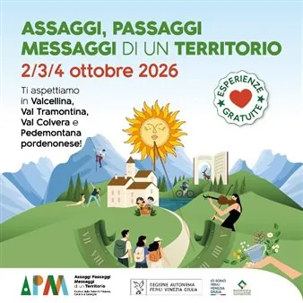

da sab 3 ott a dom 4 ott
Assaggi Passaggi Messaggi di un Territorio
Il 2,3 e 4 ottobre avrà luogo la quarta edizione del Festival “Assaggi Passaggi Messaggi di un Territorio” tra le Dolomiti Friulane pordenonesi e la Pedemontana pordenonese. Quest’anno il Festival si presenta con una formula rinnovata: 4 percorsi per 4 aree del territorio…
 Indicazioni
Indicazioni
- Costi e prenotazioni
- Costo non indicato · Prenotazione non indicata
- Programma
- Programma da verificare. Apri la fonte ufficiale per orari e possibili aggiornamenti.
- In caso di maltempo
- Nessuna indicazione specifica pubblicata.
- Note
- Acquisito automaticamente dalla fonte.
L’EVENTO
Descrizione completa
Il 2, 3 e 4 ottobre avrà luogo la quarta edizione del Festival “ Assaggi Passaggi Messaggi di un Territorio ” tra le Dolomiti Friulane pordenonesi e la Pedemontana pordenonese.
Quest’anno il Festival si presenta con una formula rinnovata: 4 percorsi per 4 aree del territorio, ciascuno con tantissime esperienze gratuite da vivere durante il weekend:
Area Verde - Val Colvera e Val Tramontina
Area Arancio - Alta Valcellina
Area Azzurra - Avianese e Bassa Valcellina
Area Gialla - Pedemontana Pordenonese
Il sabato e la domenica saranno accompagnati da una colazione di benvenuto, riservata a chi si è iscritto ad almeno un'esperienza.
In ogni area ci sarà un accompagnatore a seguire i partecipanti durante la giornata, con informazioni, consigli e suggerimenti per scoprire il territorio anche durante la pausa pranzo.
I percorsi sono liberi: nella stessa giornata puoi partecipare ad attività di aree diverse!
E al calar del sole, il sabato sera sarà la musica a chiudere la giornata, con un concerto gratuito in ciascuna delle quattro aree.
Gli eventi sono tutti confermati anche in caso di pioggia, con proposte alternative per le attività all'aperto.
Ogni esperienza è gratuita, su prenotazione.
Trovi il programma completo al link: https://tinyurl.com/mtn3jmhz
Il Festival Assaggi Passaggi Messaggi di un Territorio è realizzato con il contributo della Regione Autonoma Friuli Venezia Giulia, con il partenariato di Io sono Friuli Venezia Giulia, Pordenone with Love e Parco Naturale Dolomiti Friulane, e con la collaborazione dell'Ecomuseo Lis Aganis.
IL PROGRAMMA
Programma e orari
Appuntamenti raccolti dalle fonti elencate. Dove manca un orario, non è ancora disponibile in questa scheda.
Programma pubblicato
- Dal 2026-10-03 al 2026-10-04
INFORMAZIONI UTILI
Prima di partire
- Controllare la fonte prima di partire.
ORGANIZZAZIONE